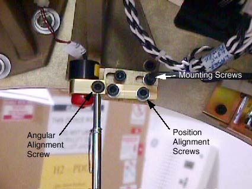
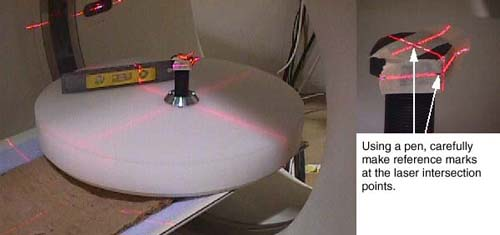

Operating Documentation
Direction 5193891-800, Rev# 5
LightSpeed 5.X Pro16 Limited Access Service Information (Adv)
Operating Documentation |
| Required Persons | Preliminary Reqs | Procedure | Finalization |
|---|---|---|---|
| 1 |
| Last Revised: | November 2004 |
| Item | Qty | Effectivity | Part# | Manufacturer | |
|---|---|---|---|---|---|
| Long Phillips #2 screwdriver | 1 | - | - | - | |
| Large washer 0.5 ID, 1.5 OD | 1 | - | - | - | |
| Torpedo Level | 1 | - | - | - | |
| 5 mm Hex key | 1 | - | - | - | |
| Large 48 cm Phantom | 1 | - | - | - | |
| Item | Qty | Effectivity | Part# | Manufacturer | |
|---|---|---|---|---|---|
| Masking Tape | - | - | - | ||
| Follow ALL required safety and PPE procedures customary for your organization when working on this product. | |
| Condition | Reference | Eff |
|---|---|---|
Only trained service personnel should service the GE CT Scanner. | - | - |
Resetting the C-Pulse must be run prior to adjusting the alignment lights to insure the gantry rotates the lasers to the proper home location. | - | - |
Remove gantry covers as required.
Refer to Parts Replacement → Gantry → Enclosure → (Cover Removal Procedure).
Remove cradle pad and associated accessories.
Place Large Phantom on end of cradle so it extends 2 inches beyond the cradle end.
Verify phantom is level front to back and side to side.
Assemble washer and screwdriver and secure to phantom as shown in Illustration 1.
Illustration 1: Internal and External Laser Alignment Jig Setup

| POSSIBLE PHYSICAL INJURY | |
| GANTRY MAY ROTATE WHEN ALIGNMENT LIGHTS ARE TURNED ON. | |
| Verify that all personnel are clear of the system, and the Gantry rotates freely to 180 degrees. |
Turn on laser lights using gantry control panel.
Adjust jig position such that:
Internal lasers shine on the washer’s edge center
Sagittal and Coronal lasers shine on the center of the screwdriver shaft
| NOTE: | Chose either the left or right side of the jig as a reference for this procedure. |
Select New Patient, Baby, 20.1 Service Generic Scan, Create New Series, Scout.
Table 1: Laser Align Generic Service Scan Scout Protocol
| SCOUT | SCAN TYPE | START LOC. | END LOC. | KV | MA | SCOUT PLANE |
|---|---|---|---|---|---|---|
| 1 | Scout | S 50 | I 50 | 120 | 80 | 90 |
| 2 | Scout | S 50 | I 50 | 120 | 80 | 0 |
Confirm and Scan.
Image Works, Browser Select Exam, Series, Image.
Select Format one over one (lower left)
| NOTE: | Both scout should now be displayed. Adjust the window and level setting so you can see the outline of the screwdriver handle. Click in a viewport to activate it, and select Grid. |
The washer and screwdriver shaft need to be centered under the zero (0) grid lines. Both washer and screwdriver should also be parallel to the associated grid lines. See Illustration 2.
Illustration 2: Aligning the Laser Adjustment Jig to ISO Center and the Z-Axis

Write down the error delta from the Zero (0) grid lines to the center of the screwdriver shaft and washer edge. Use measure distance if desired.
Position the jig exactly the error delta using gantry controls. DO NOT MOVE THE PHANTOM.
| NOTE: | Changing Elevation will post an error window. Ignore this and proceed. |
Select Repeat Series and scan.
Repeat Step 8 through Step 14 until jig reference points are centered under the grid zero (0) lines.
| Once the jig is aligned to ISO Center and the Z-Axis, do not disturb it. If it is disturbed you will need to start over. | |
Press the Internal Landmark button to zero the cradle position display.
| POSSIBLE PHYSICAL INJURY | |
| GANTRY MAY ROTATE WHEN ALIGNMENT LIGHTS ARE TURNED ON. | |
| Verify that all personnel are clear of the system, and the Gantry rotates freely to 180 degrees. |
Press the Alignment Lights button.
| SERIOUS INJURY OR DEATH | |
| UNEXPECTED GANTRY ROTATION CAN RESULT IN SERIOUS INJURY OR DEATH. | |
| Never service the gantry with the axial drive enabled. |
Turn OFF Axial Enable switch.
Adjust the Reference Internal Laser chosen in step 7 to shine on the washer’s edge center. Reference Illustration 3. Mounting Screws Angular Alignment Screw Position Alignment Screws
Illustration 3: Laser Adjustment Screws

| NOTE: | Properly adjusted Lasers will bisect the output port of the other 2 Internal lasers. |
Adjust the Sagittal and Coronal lasers so they shine on the screwdriver shaft at ISO Center. Set Coronal lasers as level as possible and Sagittal laser as parallel to the cradle as possible. Tracking adjustments will be performed in later steps.
Move the cradle out of the gantry to 240 mm position, using the gantry control panel.
Adjust the Reference External Laser to shine on the washer’s edge center.
| NOTE: | Properly adjusted Lasers will bisect the output port of the other External laser. |
After Reference Lasers have been adjusted, raise and lower the table, and verify both the External and Internal lasers track the washer’s edge center.
| If vertical angle adjustment is necessary, make sure you center the jig at ISO Center before you adjust the Internal or External reference lasers. | |
Remove the screwdriver jig without disturbing the phantom.
Now that the reference lasers have been set, use a piece of notebook paper to adjust the other Internal and External lasers to coincide with the reference lasers (see Alignment Lights Visual Checks).
Place another object, such as a full contrast bottle or unopened soda can, on the phantom. Attach masking tape and position the object at ISO Center using the laser lights. Refer to Illustration 4.
Using a pen, carefully mark the laser intersection points on the masking tape. Once set, DO NOT DISTURB THE JIG.
Illustration 4: Sagittal and Coronal Laser Alignment Jig Setup

Using the gantry control panel, move the cradle out of the gantry to 240 mm. Verify the Sagittal and Coronal laser lights track your pen marks.
| If Sagittal or Coronal angle adjustment is necessary, make these adjustments one at a time, and verify the laser tracks from Internal to External landmarks before making the next adjustment. If the jig is disturbed, reposition the jig at ISO Center to reestablish your reference. Verify both Sagittal and Coronal lasers shine on the pen marks at ISO Center before proceeding. The loss of reference will require repeating Step 5 through Step 15 and Step 25 through Step 29. This would be necessary to ensure accuracy. | |
The last adjustment is the un-referenced Coronal laser to the Reference Coronal laser chosen in Step 7(see Alignment Lights Visual Checks).
Assemble the gantry.
Perform Alignment Lights Visual Checks.